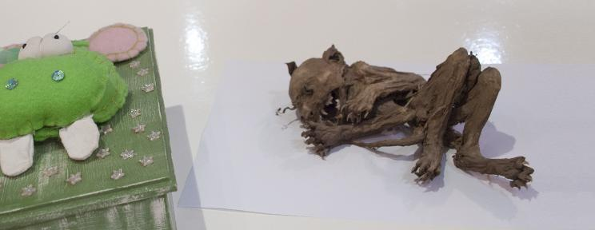

El término chupacabras hace referencia a un críptido legendario, que se describe como un ser que ataca a animales de diferentes especies en zonas ganaderas o rurales. El mito tuvo su origen en Puerto Rico en 1995, y desde entonces se han reportado diversos supuestos avistamientos en lugares tan lejanos a la isla como Maine y Chile, e incluso provenientes de países fuera del continente americano, como Rusia y Filipinas. La mayoría de los informes de avistamientos provienen de América del Norte como México y en América Central y América del Sur, especialmente en países como Costa Rica, Bolivia, Ecuador, Argentina, Brasil, Puerto Rico, República Dominicana, Honduras, Nicaragua, Colombia, Guatemala, El Salvador, Panamá, Perú, Chile, Uruguay, Venezuela, Paraguay y algunas zonas del Sur de Estados Unidos.
El nombre proviene de los supuestos hábitos hematófagos de la criatura, del que se cree que ataca a animales domésticos, especialmente cabras, succionando toda la sangre del cuerpo del animal. Las descripciones físicas de la criatura varían, pero comúnmente se describe como una criatura pesada, del tamaño de un oso pequeño y con una hilera de espinas abarcando desde el cuello hasta la base de la cola.
La gran mayoría de los supuestos avistamientos han sido descartados o nunca han podido ser confirmados debido a la falta de pruebas. En el caso de los supuestos avistamientos ocurridos en el norte de México y el sur de los Estados Unidos, se ha verificado repetidamente que las criaturas identificadas como chupacabras son en realidad perros u otros animales enfermos de sarna. Biólogos y oficiales de manejo de vida silvestre describen al chupacabras como una leyenda urbana contemporánea.
Apariencia
La descripción más común del chupacabras es la de una criatura parecida a un reptil, de piel coriácea o escamosa, de color gris verdoso con manchas negras y de espinas afiladas a lo largo de la espalda y unos enormes ojos rojos que brillan en la oscuridad. Se describe como un animal que mide entre un 1,20 a 1,50 metros de altura, y que al estar de pie o saltar guarda cierta similitud con un canguro.
La descripción actual del chupacabras es la de una raza extraña de perro salvaje. Esta variante es descrita comúnmente como carente de pelo y con una columna vertebral pronunciada, de cuencas oculares inusualmente profundas, colmillos y garras. Se dice que el chupacabras vacía completamente de sangre (y en ocasiones de órganos) a sus víctimas, normalmente a través de tres agujeros en forma de un triángulo invertido.
Posible origen del mito
El libro Journey to the Polar Sea, escrito por Sir John Franklin en 1823, dice:
"Los melancólicos sonidos que se oyen en las silenciosas noches de verano, y que la ignorancia de los hombres blancos considera como los gritos del chupacabras (goat-sucker en inglés), son realmente, según mi informante (un indio), los lamentos de estos infelices seres" (refiriéndose a los espíritus de determinados muertos). Según esto, el mito del chupacabras tiene al menos doscientos años de antigüedad y fue llevado a América por los europeos.
Una investigación realizada por el autor Benjamin Radford llegó a la conclusión de que la descripción dada por la testigo original en Puerto Rico, Madelyne Tolentino, se basó en la criatura "Sil" de la película de ciencia ficción Species. De acuerdo con el autor Scott Corrales, la criatura Sil es casi idéntica a la descripción del chupacabras hecha por Tolentino, y supuestamente la testigo habría visto la película antes de reportar el avistamiento. Corrales explica también que Sil y el chupacabras comparten varias características físicas, incluyendo las espinas de la espalda.Radford concluyó que
"la descripción más importante del chupacabras no es fiable". Este problema afecta seriamente la credibilidad del chupacabras como una criatura real.
Adicionalmente, los reportes de que a las víctimas se les había succionado la sangre nunca fueron confirmadas por una necropsia, la única manera de confirmar esta conclusión. Un análisis realizado por un veterinario a 300 supuestas víctimas del chupacabras encontró que no habían sido desangradas. Al parecer, los testigos interpretaron la falta de sangre en alguna área con una extracción de la misma, cuando otra explicación puede ser que el animal que atacó a la víctima no mordiera una arteria principal, o que esta se desangrara internamente.
Radford dividió los reportes del chupacabras en dos categorías:
- Los informes de Puerto Rico y Latinoamérica, donde a los animales se les ataca y, supuestamente, la sangre se les extrae.
- Los informes en Estados Unidos de mamíferos, la mayoría de perros y coyotes afectados por sarna, a los que la gente llama chupacabras por su aspecto extraño.
A finales de octubre de 2010, el biólogo Barry O'Connor, de la Universidad de Míchigan, llegó a la conclusión de que todos los informes de los chupacabras en los Estados Unidos eran coyotes infectados por el parásito Sarcoptes scabiei, el ácaro de la sarna, cuyos síntomas podrían explicar la mayoría de las características del chupacabras: poco pelaje, piel gruesa y olor intenso. O'Connor determinó que los ataques se produjeron
"porque esos animales estarían tan debilitados que les resultaría difícil la caza. Por lo tanto, podrían verse obligados a atacar al ganado, más fácil que cazar un conejo o un ciervo".
Aunque varios testigos llegaron a la conclusión de que los ataques no podían ser obra de perros o coyotes porque la víctima no había sido devorada, dicha conclusión no es correcta. De acuerdo con expertos, tanto perros como coyotes pueden matar una presa y no consumirla, ya sea por inexperiencia, lesiones o dificultad para matarla. La presa también puede sobrevivir al ataque directo pero morir luego por hemorragia interna o un choque circulatorio. La presencia de dos agujeros en la presa, correspondientes a colmillos, son de esperar ya que esta es la única manera que la mayoría de los animales carnívoros terrestres tienen de atrapar a su presa.
Un nuevo monstruo
A principios de la década del 2000, hizo su aparición un chupacabras diferente. Esta versión guardaba rasgos de la criatura que había sido avistada en los primeros reportes, pero ahora se parecía menos a un extraterrestre.
De hecho, ahora lo describían como un animal sin pelos en la piel, que se desplazaba en cuatro patas, como los perros.
“No quería ridiculizar el caso o descartarlo. Si el chupacabras era real, quería encontrarlo”.
Benjamin Radford, del Comité para la Investigación Escéptica.
El cambio de apariencia no le hizo perder credibilidad, por cuanto había testigos que reportaban haberlo visto y, por supuesto, estaban los cuerpos de criaturas que habían sido encontradas o cazadas.
Como científico e investigador, Radford vio aquí una oportunidad de oro.
"Cuando tienes un cuerpo, todo cambia. Puedes tomar muestras de ADN, muestra de huesos, tienes morfología" , dijo Radford.
"Al principio era escéptico sobre la existencia de la criatura. Al mismo tiempo estaba consciente de la posibilidad de descubrir un nuevo animal. No quería ridiculizar el caso o descartarlo. Si el chupacabras era real, quería encontrarlo".
El punto obvio para comenzar la investigación fueron los cuerpos del chupacabras. En su mayoría aparecieron en el estado de Texas y otras zonas en el sureste de Estados Unidos. Radford contabilizó 12 en total.
Realmente eran tan horribles como las descripciones hechas por los testigos: sin pelos, demacrados y con la piel aparentemente quemada.
Las expectativas se fueron disipando luego que las pruebas de ADN revelaron una realidad bastante corriente. Los cuerpos eran perros, coyotes o mapaches, e incluso uno era un pescado.
¿Cómo pudieron confundir estos animales con monstruos extraterrestres?
"El motivo por los que estos animales fueron identificados como chupacabras fue porque perdieron el pelo. Tenían sarna sarcóptica causada por ácaros, lo cual es muy común", comenta Radford.
La profesora Allison Diesel, de la Universidad de Texas A&M y especialista en enfermedades inflamatorias de la piel, confirmó esta versión y agregó que esta enfermedad puede ser lo suficientemente espantosa como para hacer lucir a cualquier animal como un monstruo.
"Los perros sarnosos son casi calvos, con partes de la piel roja o casi negra, y muy gruesa", explica la profesora. Si a eso le sumas heridas que el animal se realiza cuando se rasca, terminas con un buen prospecto de chupacabras.
Pero si los supuestos chupacabras terminaron siendo animales corrientes, aún quedaban los cuerpos de las víctimas para esclarecer el mito.
Cronología de los supuestos avistamientos
1995 - 1999
Los reportes de supuestos avistamientos de la criatura proliferaron a mediados de la década de los 90 en varios lugares Nayarit comenzaron a aparecer decenas de animales mutilados, así como en otros lugares de México, el sur oeste de los Estados Unidos y en China. Los primeros reportes provenientes de Puerto Rico sumaban más de 200 en el año de 1995.
2000 - 2010
En abril de
2000, en la ciudad minera de Calama (en el norte de Chile), se informó de un centenar de animales de corral desangrados o mutilados de forma muy extraña, situación que se mantuvo hasta casi finales de 2002. Pronto se produjo una serie de denuncias recogidas por la prensa sensacionalista, provenientes de otros sectores del país, aunque nunca se pudo concretar nada extraordinario. Un campesino mató una huiña, provocando atención internacional, y otros confundieron el feto de un monito del monte con este ser. Surgió un mito urbano sobre que una supuesta misión de la NASA habría llegado al país para estudiar el fenómeno. Tras muchas especulaciones los estudios terminaron indicando que los ataques solo se debieron a perros: "Tanto las huellas de pisadas como de pelos indicaron que eran perros domésticos".
En la primera mitad de
2002 se encontró ganado vacuno mutilado en varios puntos de Argentina (en la zona comprendida entre las provincias de Río Negro y Santa Fe). Si bien se percibían ablaciones de los aparatos reproductivos de los animales, los medios asociaban los hechos con el fenómeno chupacabras o con ritos de sectas satánicas. Pasó muy poco tiempo para que el Servicio Nacional de Sanidad y Calidad Agroalimentaria (SENASA) concluyera que las mutilaciones fueron llevadas a cabo por zorros o ratones hocicudos.
En julio de
2004 , un ganadero mató a una criatura parecida a un perro sin pelo, a la que descubrió atacando a su ganado, cerca de San Antonio, Texas. El animal, inicialmente nombrado la Bestia de Elmendorf, fue identificado más tarde como un coyote con sarna sarcóptica, luego de que su ADN fuera examinado por la Universidad de California en Davis. En octubre de ese mismo año, se encontraron otros dos cadáveres en la misma área. Biólogos de Texas examinaron muestras de ambos cadáveres y pudieron determinar que también se trataba de coyotes enfermos de casos muy severos de sarna.
En el Condado de Coleman, Texas, un granjero llamado Reggie Lagow capturó a un animal con una trampa que había montado después de que algunas de sus aves de corral habían aparecido muertas. La apariencia del animal fue descrita como una mezcla de perro sin pelo, rata y canguro. Lagow puso el animal a disposición de oficiales a cargo de los parques y la vida silvestre de Texas para ser identificado, aunque más tarde declaró en una entrevista con John Adolfi que se había deshecho de la criatura dos días después de haberla encontrado.
A mediados de agosto de
2006 , una mujer llamada Michelle O'Donnell, de Maine, fotografió a un extraño animal al lado de una carretera. O'Donnell recordaba haber visto al mismo animal rondando cerca de su casa una semana antes, y su esposo describió al mismo como una mezcla entre un roedor y un cánido. El animal había sido aparentemente atropellado por un auto y no era identificable. Originalmente se informó que el cadáver había sido destruido por los buitres antes de que los expertos pudieran examinarlo, pero más tarde, oficiales de vida silvestre lograron tomar una muestra de ADN, pudiendo determinar que se trataba de un híbrido de lobo y perro.
En agosto de
2007 , una mujer llamada Phylis Canion fue informada del hallazgo de los restos de un animal de apariencia extraña en Cuero, Texas, en el exterior de la propiedad de una vecina. Canion se había dedicado durante las últimas semanas a intentar fotografiar o filmar una supuesta criatura extraña a la que creía responsable de la muerte de alrededor de 30 de sus gallinas a lo largo de varios años. Canion también afirmó haber visto a tres criaturas similares a los restos descubiertos. Luego de fotografiar los restos de la criatura, Canion contactó a un taxidermista para disecar a la criatura, a la que posteriormente comenzó a exhibir en su casa.
Después de que la noticia alcanzara notoriedad nacional, expertos de la Universidad Estatal de Texas San-Marcos se ofrecieron a realizar pruebas de ADN a la criatura. El análisis resultó en la identificación de la criatura como un coyote. Canion, no satisfecha, contactó entonces a expertos de la Universidad de California en Davis para un segundo análisis. En esta ocasión, los análisis determinaron que la criatura era específicamente un híbrido: una cruza de coyote y de lobo mexicano. De acuerdo con científicos y especialistas en vida silvestre, este híbrido no es desconocido y ha sido estudiado antes. En cuanto a la apariencia extraña del animal, se cree que el animal sufría posiblemente de sarna, lo que puede explicar la piel entre grisácea y azul del animal.
El poblado de Cuero volvería a ser el marco de otro avistamiento un año más tarde, en agosto de
2008 , cuando Brandon Riedel, ayudante de sheriff del Condado de DeWitt, filmó a un animal no identificable en callejones de esta ciudad, con la cámara del tablero de su patrulla. El animal era del tamaño de un coyote, pero carecía de pelo y tenía el hocico largo, así como patas delanteras cortas y patas traseras largas. El sheriff Jode Zavesky, jefe de Reiter, sospechó que se trataba de la misma especie de coyote identificada por investigadores de la Universidad Estatal de Texas-San Marcos en noviembre de 2007. El vídeo fue mostrado en abril de 2011 en un episodio de la serie de televisión Faked or Fake: Paranormal Files, del canal de televisión Syfy, en el que un equipo de investigadores intentaron recrear el vídeo del tablero usando un caballo miniatura y un perro xoloitzcuintle. Ninguno de los animales de prueba usados parecía coincidir con la criatura del vídeo. El equipo también examinó una muestra de ADN tomada del supuesto cadáver de una de las criaturas halladas por un granjero local e identificada más tarde como un híbrido de lobo y coyote.
En septiembre de
2009 , CNN transmitió un vídeo en el cual se hacía un acercamiento a un animal muerto no identificado. El mismo reporte afirmaba que la gente local había comenzado a especular sobre la posibilidad de que se tratara de un chupacabras. Un taxidermista del Condado de Blanco, Texas, afirmó que uno de sus antiguos estudiantes le había proporcionado el cuerpo del animal, el cual supuestamente había sido descubierto por un primo de ese estudiante en un granero, y que al parecer había muerto luego de ingerir veneno para roedores. El taxidermista expresó creer que se trataba de una mutación genética de coyote.
En julio de
2010 , se reportó que oficiales de control animal le habían disparado y matado a un supuesto chupacabras en el Condado de Hood, Texas. Sin embargo, un oficial de control animal de este lugar afirmó que científicos de la Universidad de Texas A&M llevaron a cabo pruebas de identificación en el cadáver, determinando que se trataba de un híbrido entre coyote y perro, con señales de sarna y de parásitos internos. Un segundo supuesto chupacabras, que fue abatido a algunos kilómetros de allí, fue devorado por buitres antes de que pudiera ser recuperado para ser sometido a pruebas.
El 18 de diciembre de 2010, en el Condado de Nelson, Kentucky, un hombre llamado Mark Cothren le disparó y mató a un animal al que no pudo reconocer. Se tomaron muchas fotos de la criatura y la historia fue recogida por varias organizaciones de noticias. Cothren describió a la criatura de orejas largas, bigotes, una cola larga y del tamaño de un gato doméstico. Cothren dijo haber hablado con el Departamento de Recursos de Pesca y Vida Silvestre de Kentucky, a quienes supuestamente entregó el animal para análisis posteriores.
2011 - 2014
El 4 de julio de
2011 , Jack Crabtree, de Lake Jackson, Texas, declaró haber visto a un supuesto chupacabras en su patio trasero. En un principio, Crabtree se mantuvo firme en su teoría original del chupacabras, pero después de que su historia fuera publicada por el periódico local y de que varios reporteros de otros medios reprodujeran la historia unos días más tarde, Crabtree cambió de parecer rápidamente y aceptó la explicación de los expertos de que la criatura era probablemente un coyote con sarna, agregando que se había tratado de una broma que nunca creyó del todo. Su historia fue relatada por CNN y MSNBC. El 15 de julio de 2011, la policía local logró capturar a la criatura que Crabtree había visto, y los expertos pudieron confirmar que se trataba definitivamente de un coyote con sarna.
En
2012 en Loma Hermosa, en Tepic, varios habitantes reportaron haber visto a una criatura pasar a gran velocidad por las calles del barrio.
A principios de septiembre de
2013 , una familia de la ciudad de Rosario, en la provincia de Santa Fe, Argentina, reveló a los medios que poseía el cadáver de un animal pequeño que había sido hallado en la localidad de Vera (norte de Santa Fe), al cual no podían identificar y al que algunos habían relacionado con el mítico chupacabras. Tras la difusión de la noticia, el profesor Jorge Martí, jefe de Museología y Taxidermia del Museo de Ciencias Naturales «Dr. Ángel Gallardo» de Rosario, examinó el ejemplar y determinó que se trataba de un gato naturalmente momificado.

El 7 de septiembre de 2013 , el canal de noticias FOX 2 News de San Luis, Misuri, publicó en su sitio web un reporte acerca de dos avistamientos. En el primero, una mujer había avistado a un "animal parecido a un pequeño perro gris" cerca de la puerta principal de Old Lake Hill Speedway en la misma ciudad, mientras que una semana antes, un cazador afirmaba haber matado a un chupacabras mientras cazaba mapaches. El Departamento de Vida Silvestre de Misisipi determinó que en este caso también se trataba de un perro con sarna.
Una pareja tejana que habitaba un rancho en el Condado de Victoria, relató a los medios haber disparado y matado a un chupacabras en su propiedad, la tarde del 23 de febrero de 2014. Un biólogo de vida silvestre que trabajaba para el Departamento de Parques y Vida Silvestre de Texas, habló también con los medios, rindiendo la siguiente declaración: "He visto ardillas, mapaches y coyotes de las mismas características en esta área. [El chupacabras] es una criatura mítica que la mayoría de las personas ven, pero realmente se trata de sarna sarcóptica, la que es ocasionada por un ácaro que muerde a un animal. Este solo puede tratarse de un mamífero: perros, gatos, coyotes, zorros; y existe una versión de la cual los humanos también pueden contagiarse."
El 3 de abril de 2014 , otra pareja tejana afirmó haber capturado a un chupacabras en Ratcliff, Texas, el 29 de marzo del mismo año. Benjamin Radford, de Livescience, sugirió que el animal se trataba de un mapache afectado por sarna sarcóptica.
Supuesto chupacabras encontrado en la carretera estatal 72 de Florida